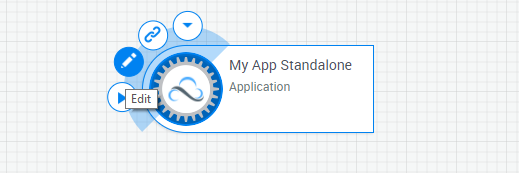

CloudShell VE Trial
Powered By Quali © 2017
Default blueprint with pre configured setup & teardown processes which deploys Apps and connections on Setup and deletes App VMs on Teardown
Dear blueprint designer , welcome to your first CloudShell blueprint. This is the place for you to plan your sandbox, its components, orchestration and metadata. A blueprint is an offline planning platform which will become live once you click Reserve.
Start by browsing the Apps and services catalog and selecting Apps or services to add into your blueprint.
You can add a standalone instance of "My App" or just add the web server and associate it with a database by creating a connection between them. There are also some vanilla OSs for you to play with and some cloud services you can use. Add applications or services by dragging them into the canvas.
Note that the Apps and services catalog is a custom catalog that is usually created by the App designer - the CloudShell user that designs the applications and services and then publishes them to a catalog to be used by blueprint designers. The catalog content that you see here in CloudShell VE Trial is just an example for applications and services that can be made available to the Blueprint designer.
To edit its name and description, hover over an App and click the Edit button.
You can also review the App's parameters, which include its deployment path details, the configuration definition of the application to be installed, if it exists, and the details of the App resource (the resource that is created once the App is deployed).
Just before you publish your blueprint, it is recommended to give it a meaningful name and description, define input parameters and customize some of its properties. To do that, open the the blueprint's Properties page.
Important! ,The configuration of all the application elements (such as the HA Proxy with the web servers, and the web servers with the database in the example above) is defined in the sandbox's setup which is a custom script. The out of the box setup script that comes with CloudShell only deploys all the sandbox components but any further custom configuration should be defined in the script.
Editing the script isn't supported in CloudShell VE Trial version (only in full CloudShell) and therefore we associated a custom script that can configure the application as defined in the above example or a subset of it, but other custom combinations won't work.
Note that in your Trial version your sandbox is limited to 7 Apps, please avoid adding more than 7 otherwise your sandbox will fail to deploy.
Now it’s time to make the blueprint live and create your customized Sandbox by clicking the Reserve button. Launching the Sandbox will deploy its components on new AWS instances located in a cloud subnet (in this case, an AWS VPC), which is dedicated to the Sandbox and is completely isolated.
Please note that in your trial version you are limited to 2 hours per sandbox and up to 2 concurrent sandboxes.
The default blueprint comes with out of the box Setup and Teardown scripts associated with it. The Setup orchestration script is automatically launched when the sandbox is started, and deploys and configures all the applications within the sandbox on the selected cloud provider, in our case AWS US East (N. Virginia) region
You can monitor the sandbox's setup stages (deployment, configuration etc.) once the reservation is started both by viewing the reservation status and by following the progress in the Output console.
Once the sandbox setup completes, you can access the VMs by hovering over an App and clicking SSH, RDP and Web, where applicable.
You can launch commands available on the applications via their commands pane and monitor the commands progress in the Output console.
By default, the sandbox is set to automatically end once its allocated time has passed. However, you can manually stop the sandbox when you finish working with it by clicking the End button.
When the sandbox ends, a Teardown process kicks in and deletes all the VMs along with the sandbox's dedicated VPC and Subnet in AWS. You can monitor the Teardown progress by opening the Output console.
For more information refer to Quali help site or
search in Quali Community.